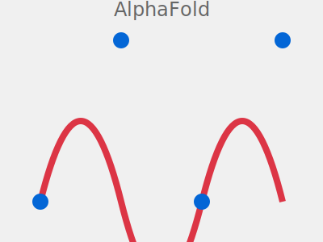
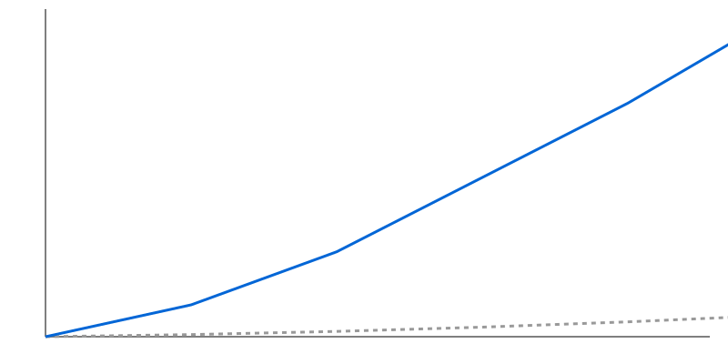

Inteligencia artificial y futuro científico
Aprendizaje automático, reconfiguración del conocimiento y el futuro de la investigación
Aníbal M. Astobiza
Universidad de Granada
3 de Julio de 2025
Resumen Ejecutivo
- ✓ La teoría no desaparece: se redistribuye en las infraestructuras de datos y arquitecturas de ML
- ⚠️ La automatización acelera el descubrimiento pero introduce sesgos sistémicos y crisis de reproducibilidad
- 👩🎓 El científico evoluciona de ejecutor a director estratégico, validador crítico y curador epistémico
Motivación: La Transformación de la Ciencia
Desafío Central:
- 200+ millones de estructuras proteicas predichas por AlphaFold
- Laboratorios automatizados que ejecutan miles de experimentos/día
- Modelos opacos tomando decisiones críticas
La Provocación de Chris Anderson
"El diluvio de datos hace obsoleto el método científico. Con suficientes datos, los números hablan por sí mismos. La correlación es suficiente."
— Chris Anderson, Wired (2008)
¿Realmente marca el Big Data el fin de la teoría científica?
Hoja de Ruta
- La epistemología cambiante del conocimiento científico
- La automatización del descubrimiento: promesa y peligro
- El humano en el bucle: autoría, agencia y futuro
Parte I
La Epistemología Cambiante del Conocimiento Científico
El Viaje de los Datos: Sabina Leonelli
Conceptos Clave:
- Datos como categoría relacional: no son "dados", son construidos
- Viaje de datos: Descontextualización → Recontextualización
- Curadores como productores: trabajo invisible de hacer datos útiles
Contexto Original
↓
Descontextualización
↓
Viaje/Curación
↓
Recontextualización
Comprensión y Opacidad: Emily Sullivan
Tesis Central
La barrera para la comprensión en ML no es la opacidad interna, sino la falta de evidencia que conecte el modelo con el fenómeno.
$$\text{Comprensión} = f(\text{Vínculo Modelo-Fenómeno})$$
$$\text{Riesgo Inductivo} \propto \text{Valores No-Epistémicos}$$
Implicaciones:
- La opacidad tolerable depende del contexto de aplicación
- Los valores éticos moldean los estándares de validación
Convergencia Teórica
Insight La teoría no desaparece, se redistribuye en la infraestructura
Estado del Arte
Panorama Actual de la IA en Ciencia
Paradigmas Científicos: Evolución Histórica
| Paradigma |
Era |
Método |
Ejemplo |
| Empírico |
Milenios |
Observación |
Astronomía antigua |
| Teórico |
Siglos |
Modelos |
Leyes de Newton |
| Computacional |
Décadas |
Simulación |
Modelos climáticos |
| Data-intensivo |
Actual |
ML + Big Data |
AlphaFold, LLMs |
Cambio fundamental: de hipótesis → datos a datos → hipótesis
Aplicaciones Revolucionarias
Biología:
- AlphaFold: 200M+ estructuras
- Diseño de fármacos con IA
- Predicción de mutaciones
Física:
- Detección de ondas gravitacionales
- Análisis del LHC
- Simulaciones cuánticas
Desafíos Sistémicos Actuales
⚠️ Crisis de Reproducibilidad:
- 70% de estudios ML no reproducibles
- Falta de documentación
- Hiperparámetros ocultos
🐛 Sesgo Algorítmico:
- Algoritmos médicos discriminatorios
- Datos no representativos
- Amplificación de desigualdades
90% de fármacos con IA fallan en ensayos clínicos
Métodos
Arquitectura del Científico Algorítmico
Pipeline de Investigación Automatizada
Bucle Cerrado Retroalimentación continua
Algoritmo: Robot Scientist
class RobotScientist:
def __init__(self, knowledge_base, lab_equipment):
self.kb = knowledge_base
self.lab = lab_equipment
self.hypotheses = []
def generate_hypotheses(self, observations):
# Usar ML para generar hipótesis candidatas
candidates = self.ml_model.predict(observations)
return self.rank_by_novelty(candidates)
def design_experiment(self, hypothesis):
# Optimización bayesiana para diseño eficiente
return self.bayesian_optimizer.suggest(hypothesis)
def execute(self, experiment):
return self.lab.run_automated(experiment)
Arquitectura del Sistema
Componentes Clave:
- Data Layer: MongoDB, PostgreSQL
- Processing: PyTorch, JAX
- Automation: ROS, LabVIEW
- Interface: REST APIs
Interface Layer
↓
API Gateway
↓
ML Services
↓
Data Storage
Protocolo de Validación
Validación en Tres Niveles
- Técnica: Métricas de ML (accuracy, F1, AUC)
- Científica: Reproducibilidad, generalización
- Ética: Sesgo, equidad, transparencia
$$\text{Confiabilidad} = \alpha \cdot \text{Precisión} + \beta \cdot \text{Reproducibilidad} + \gamma \cdot \text{Equidad}$$
donde $\alpha + \beta + \gamma = 1$ y dependen del dominio
Resultados
Casos de Éxito y Transformación
AlphaFold: Revolución en Biología Estructural
Impacto Cuantitativo:
- 200+ millones de estructuras predichas
- Precisión: 92.4 GDT (vs 60 métodos anteriores)
- Reducción temporal: años → horas
- Aplicaciones en 190+ países
Nobel 2024
Reconocimiento máximo

Científicos Robot: Adam y Eve
| Sistema |
Dominio |
Logros |
| Adam |
Genómica |
Primera máquina en descubrir conocimiento científico nuevo |
| Eve |
Fármacos |
Reposicionamiento de compuestos anticancerígenos |
| iBioFoundry |
Enzimas |
Mejora 100× en actividad enzimática |
Característica común: Bucle cerrado completamente automatizado
Aceleración del Descubrimiento

15× más hipótesis evaluadas en el mismo tiempo
Democratización del Conocimiento
Acceso Global a AlphaFold:
- 1M+ investigadores activos
- 190+ países
- Gratuito y abierto
- API disponible
Open Science Cambio de paradigma
Métricas de Impacto Científico
Período: 2020–2025 en campos con alta adopción de IA
Análisis de Robustez
Limitaciones y Desafíos
Sesgo Algorítmico en Salud
Caso: Algoritmo de Priorización
- Subestimó necesidades de pacientes negros
- Usó costo histórico como proxy
- Afectó a 200M+ personas
El sesgo en datos históricos se amplifica en predicciones
Crisis de Reproducibilidad
70% de papers en ML no pueden ser reproducidos
Matriz de Riesgos por Dominio
Escala: 1 (bajo) – 10 (alto)
Discusión
Implicaciones y Reflexiones
Hallazgos vs. Literatura
Nuestros Hallazgos:
- ✓ Teoría redistribuida, no eliminada
- ✓ Rol humano evoluciona, no desaparece
- ✓ Calidad depende del "viaje de datos"
Literatura Previa:
- ✗ "Fin de la teoría" (Anderson)
- ✗ "Científicos obsoletos"
- ✗ "Datos hablan solos"
Síntesis: Transformación, no eliminación
La Paradoja de la Automatización
"A medida que un sistema automatizado se vuelve más eficiente, la contribución humana, aunque menos frecuente, se vuelve más crítica"
El Científico como Director de Orquesta
Antes:
- Ejecutor manual
- Análisis individual
- Publicación lineal
Ahora:
- Director estratégico
- Curador epistémico
- Validador crítico
Limitaciones del Estudio
- ⚠️ Sesgo de supervivencia: solo analizamos casos exitosos publicados
- ⚠️ Horizonte temporal: cambios muy recientes, efectos a largo plazo inciertos
- ⚠️ Diversidad disciplinar: foco en ciencias naturales, menos en humanidades
- ⚠️ Acceso desigual: brecha entre instituciones con/sin recursos para IA
Crítico Necesidad de estudios longitudinales y multidisciplinarios
Trabajo Futuro
Prioridades de Investigación:
- Desarrollo de métricas de confiabilidad para IA científica
- Protocolos de validación cross-disciplinarios
- Infraestructura abierta para reproducibilidad
Mensajes Clave
💡 La teoría se transforma, no desaparece
👩🎓 El científico evoluciona a roles superiores
⚖️ La confiabilidad requiere gobernanza integral
Referencias Seleccionadas
- Leonelli, S. (2016). Data‐Centric Biology: A Philosophical Study. University of Chicago Press.
- Sullivan, E. (2022). Understanding from Machine Learning Models. British Journal for the Philosophy of Science, 73(1).
- Anderson, C. (2008). The End of Theory: The Data Deluge Makes the Scientific Method Obsolete. Wired Magazine.
- King, R. D. et al. (2009). The Automation of Science. Science, 324(5923).
- AlphaFold Team (2021). Highly accurate protein structure prediction with AlphaFold. Nature, 596.
- Gunkel, D. J. (2023). Person, Thing, Robot: A Moral and Legal Ontology. MIT Press.
¡Gracias!
✉ amastobiza@ugr.es